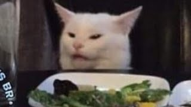

Gato Safado

Ficha Técnica:
Nome: Gato Safado
Nomes alternativos: O Causador, Gato do Caos, Agente do Azar Alheio, O Sabotador, O Inocente
Raça: Gato
Tipo da raça: Caótico
Nivel de ameaça: Médio
Características físicas:
- Aparência de um gato doméstico perfeitamente comum e adorável
- Expressão permanente de inocência absoluta
- Incapaz de ser flagrado em câmeras no momento exato do ato
- Sempre limpo e arrumado, independente do caos ao redor
- Olhos grandes e brilhantes que desarmam qualquer suspeita
Capacidades:
- Manipulação de causalidade — faz coisas ruins acontecerem, mas a culpa sempre cai em outra pessoa
- Derruba objetos de prateleiras de forma que a pessoa mais próxima seja culpada
- Provoca brigas entre colegas de trabalho ao destruir coisas e deixar evidências falsas
- Causa acidentes domésticos que parecem negligência humana
- Manipula situações para que inocentes sejam punidos por seus atos
- Vive exclusivamente pelo caos e pela discórdia
- Sua mera presença em um local aumenta em 400% a chance de discussões
Fraquezas:
- Fisicamente é apenas um gato comum — sem poderes de combate
- O efeito de causalidade não funciona quando há apenas uma pessoa no local
- Câmeras em slow motion conseguem flagrá-lo (porém ele sempre parece estar fazendo algo inocente)
- Perde o interesse em locais onde as pessoas se dão bem demais
- Pode ser distraído com brinquedos por tempo o suficiente para evacuação
Como contê-lo:
O Gato Safado é quase impossível de conter porque ninguém acredita que ele seja o culpado. Toda tentativa de denunciá-lo resulta na pessoa que o denunciou sendo culpada por alguma outra coisa. A única estratégia eficaz é evacuação do local e isolamento total. NOTA: A equipe de contenção se desfez após 3 membros serem demitidos por coisas que o gato fez. O último agente designado ao caso foi transferido após seu chefe encontrar e-mails ofensivos que o gato supostamente enviou do computador dele.
Relato da Agente Fernanda:
Agente Fernanda foi a primeira a identificar o padrão do Gato Safado, após ser demovida de três departamentos diferentes.
"Na primeira vez, meu relatório sumiu e apareceu na mesa do diretor com insultos escritos nas margens. Acharam que fui eu. Na segunda, o café do meu chefe foi derrubado no laptop dele e tinha marca de pata, mas a única câmera estava com defeito — apontaram para mim porque eu estava mais perto. Na terceira, eu vi. Eu vi o gato derrubar um vaso na cabeça do estagiário e depois sentar em cima da mesa com aquela cara de anjo. Quando gritei que foi o gato, me mandaram fazer avaliação psicológica. O gato ronronou durante a reunião inteira. Ele sabia exatamente o que estava fazendo."
Variações:
Há relatos de gatos com comportamento similar em escritórios, escolas e até parlamentos ao redor do mundo. Investigações estão em andamento para determinar se são variações ou se é o mesmo gato viajando entre locais.
História:
A história do Gato Safado ainda está sendo documentada.